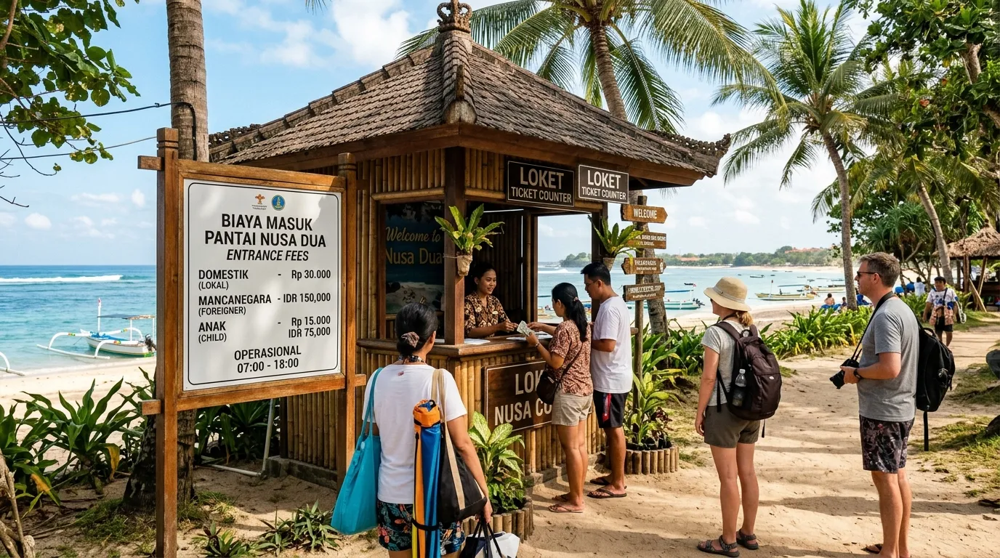

Pantai Balekambang Malang menjadi salah satu destinasi wisata pantai selatan yang paling banyak dicari wisatawan saat berkunjung ke Malang, Jawa Timur. Pantai ini kerap dijuluki "Tanah Lot-nya Jawa Timur" karena memiliki pura yang berdiri di atas pulau karang kecil, mirip dengan ikon wisata Tanah Lot di Bali. Perpaduan antara pasir putih, ombak besar khas pantai selatan, dan nuansa spiritual dari pura membuat pantai balekambang selalu ramai dikunjungi, baik oleh wisatawan lokal maupun rombongan dari luar kota.
Artikel ini akan membahas secara lengkap harga tiket balekambang terbaru, rute menuju lokasi dari Kota Malang, fasilitas yang tersedia, hingga berbagai daya tarik yang sayang untuk dilewatkan.
Pantai Balekambang kerap dijuluki "Tanah Lot-nya Jawa Timur" karena memiliki pura yang berdiri megah di atas pulau karang kecil, mirip dengan ikon wisata Tanah Lot di Bali.
Lokasi Pantai Balekambang
Pantai Balekambang Malang berada di Dusun Sumber Jambe, Desa Srigonco, Kecamatan Bantur, Kabupaten Malang, Jawa Timur. Lokasi ini berjarak kurang lebih 60 km ke arah selatan dari Kota Malang, dengan akses jalan yang mulus dan pemandangan pepohonan rindang di sepanjang perjalanan. Perjalanan dari pusat kota biasanya memakan waktu sekitar 2 jam menggunakan kendaraan pribadi, tergantung kondisi lalu lintas.
Harga Tiket Balekambang Terbaru
Harga tiket masuk Pantai Balekambang Malang tergolong terjangkau dan berubah menyesuaikan hari kunjungan. Berdasarkan beberapa sumber terbaru, kisaran harga tiket balekambang adalah sebagai berikut:
Ombak di Pantai Balekambang Malang cukup besar, sehingga pengunjung tidak disarankan untuk berenang, namun bagi yang ingin berlama-lama menikmati suasana pantai, tersedia area untuk berkemah atau piknik. Menariknya, Pantai Balekambang tidak mengenakan biaya tambahan bagi pengunjung yang ingin berkemah, meski pengelola tidak menyediakan penyewaan tenda sehingga peralatan kemah harus dibawa sendiri.
Catatan: Harga tiket masuk dapat berubah sewaktu-waktu, terutama saat musim liburan atau event khusus. Disarankan mengonfirmasi tarif terbaru sebelum berangkat, misalnya lewat media sosial resmi pengelola atau saat menghubungi loket wisata setempat.

Rute Menuju Pantai Balekambang dari Kota Malang
Ada dua jalur utama yang bisa dipilih untuk menuju Pantai Balekambang Malang dari pusat kota:
1. Jalur via Gondanglegi (paling umum)
Rute ini dimulai dari pusat Kota Malang ke arah selatan menuju Gadang, lalu lurus terus melewati Bululawang menuju Kecamatan Gondanglegi. Dari Gondanglegi, perjalanan dilanjutkan menuju Kecamatan Bantur hingga Desa Srigonco, tempat Pantai Balekambang berada. Jalur ini relatif lebih ramai namun memiliki papan penunjuk arah yang jelas.
2. Jalur via Kepanjen
Alternatif lain adalah melalui Kepanjen, lalu Pagak, Gondanglegi, Bantur, hingga Srigonco. Kepanjen menjadi penanda masuk wilayah selatan dengan SPBU terakhir yang mudah diakses sebelum jalan mulai menyempit, sementara area Pagak mulai berbukit dengan pemandangan yang lebih hijau.
Untuk transportasi umum, tersedia bus DAMRI yang melayani rute dari Kota Malang menuju Pantai Balekambang dan Pantai Sendang Biru, dengan jadwal keberangkatan setiap hari. Selain itu, ada juga opsi sewa campervan bagi rombongan kecil yang ingin lebih fleksibel.
Daya Tarik Pantai Balekambang Malang
1. Pura Luhur Amerta Jati di Pulau Ismoyo
Daya tarik utama pantai ini adalah keberadaan Pura Luhur Amertha Jati yang terletak di Pulau Ismoyo, yang dapat diakses menggunakan jembatan penghubung dari daratan. Pengunjung bisa berjalan menyusuri jembatan sambil menikmati panorama laut lepas dan berfoto dengan latar belakang pura.
2. Deretan Pulau Karang
Selain Pulau Ismoyo, terdapat juga Pulau Anoman dan Pulau Wisanggeni yang berjajar ke arah barat dari pantai ini, menambah keindahan lanskap pesisir.
3. Sunset yang Memesona
Pantai ini juga terkenal akan keindahan panorama sunset-nya; saat senja, langit dihiasi gradasi warna oranye dan keemasan yang menciptakan suasana romantis dan menenangkan.
4. Aktivitas Wisata Beragam
Pengunjung bisa melakukan berbagai aktivitas menyenangkan seperti duduk santai di pinggir pantai, snorkeling, memancing, hingga bermain flying fox yang hanya tersedia pada akhir pekan. Berkemah di tepi pantai juga menjadi aktivitas favorit, terutama bagi rombongan yang ingin menikmati sunrise keesokan harinya.
5. Upacara Adat Tahunan
Pada bulan Suro menurut kalender Jawa, pantai ini ramai dikunjungi wisatawan dalam dan luar negeri karena digelarnya Upacara Suroan dan Upacara Jalanidhi Puja oleh penduduk sekitar.
Fasilitas di Pantai Balekambang
Sebagai kawasan wisata yang sudah dikelola sejak lama, Pantai Balekambang Malang menyediakan berbagai fasilitas pendukung, di antaranya:
- Area parkir luas untuk motor, mobil, hingga bus pariwisata
- Toilet umum dan kamar bilas
- Warung makan dan penjual oleh-oleh di sekitar area pantai
- Area camping ground di tepi pantai
- Wahana flying fox (akhir pekan)
- Musala untuk beribadah
Tips Berkunjung ke Pantai Balekambang
- Bawa uang tunai secukupnya karena sinyal untuk pembayaran digital kadang belum stabil di area pesisir.
- Hindari berenang terlalu jauh dari bibir pantai karena ombaknya cukup besar, khas pantai selatan.
- Kenakan pakaian sopan saat berkunjung ke area pura.
- Datang pagi atau sore hari untuk menghindari teriknya matahari sekaligus menikmati suasana sunrise atau sunset.
- Cek kondisi cuaca dan ombak sebelum berangkat, terutama saat musim hujan.
- Konfirmasi harga tiket terbaru sebelum berangkat karena tarif dapat berubah sewaktu-waktu.
Dengan keindahan alam yang memukau, fasilitas yang memadai, dan harga tiket yang ramah di kantong, Pantai Balekambang Malang layak menjadi salah satu destinasi utama saat kamu berlibur ke Malang!